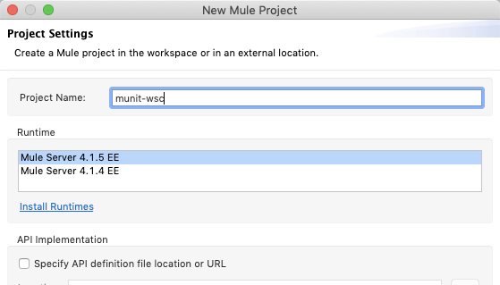
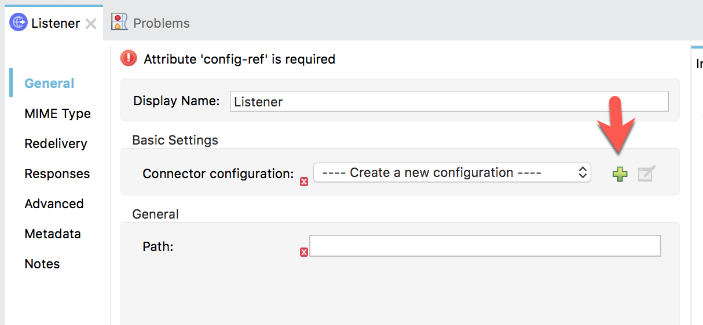
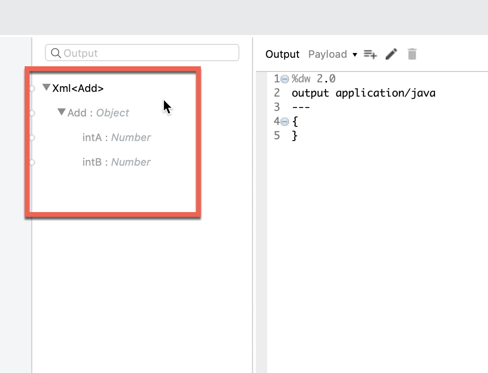

Last Updated: 2020-07-07
Overview
This guide provides an overview of setting up a MUnit test against a Web Server Consumer component in Mule 4.x. We'll use a publicly available endpoint that exposes a Calculator service for the implementation. Around that, we'll create a test suite that shows how to mock the Web Service response.
When you use the ‘Mock when' processor, it allows you simulate an endpoint. When you setup the validation using an ‘Assert that' processor, you can test against the mocked data to ensure the transformations are correct.
What you'll build
In this codelab, you're going to build simple MUnit test against a SOAP endpoint that is being called using the Web Service Consumer component.

What you'll learn
- How to set a MUnit test suite to mock a SOAP response
What you'll need
- Anypoint Studio 7.5.x
- MUnit 2.2.5
- Mule EE 4.3.0
- Example SOAP Web Service - Link
Create a new project
Open Anypoint Studio and create a new Mule Project
In the New Mule Project window, give the project a name (e.g. munit-wsc), select a Runtime, and then click on Finish

Once the new project is created, you'll be presented with a blank canvas. In the Mule Palette on the right, click on HTTP and then drag and drop the Listener into the canvas.

Add HTTP Listener Configuration
If the Mule Properties tab doesn't open, click the Listener icon and click on the green plus sign to create a new Connector configuration.

Under the General tab, and in the Connection section, take note of the port. By default this will be 8081. Go ahead and click on OK to accept the defaults and proceed.

Set Listener Path
Back in the Listener Mule properties tab, fill in the Path field with the value /calc.

Add the Web Service Consumer Connector
Back in the Mule Palette, we need to add the Web Service Consumer Connector. Click on Add Modules
From the list of available connectors, drag and drop the Web Service Consumer to the window that says Drag and drop here to add to project
If a dialog window pops up asking to select a module version, select the newest version. If you don't have the latest version, click on Search in Exchange and search for Web Service Consumer
From the list of operations from Web Service Consumer, drag and drop the Consume onto the canvas. Place it after the Listener module.
Add Web Service Consumer Configuration
Select the Consume processor to open the Mule properties tab. Click on the green plus sign next to the Connector configuration field.
Paste the following into the Wsdl location field:
http://www.dneonline.com/calculator.asmx?wsdlThe Service, Port, and Address will automatically be parsed from the WSDL file. You'll need to click on the drop-down for each field and select the default for each:
Service: Calculator
Port: CalculatorSoap
Address: http://www.dneonline.com/calculator.asmx
Click on OK to close the window.
Select the SOAP Operation
In the Mule properties window for the Consume component, select the drop-down for the Operation field and select Add.
In the next section, we'll create the SOAP request and format the response using DataWeave.
Create DataWeave Script
Now that the Web Service Consumer Connector is configured with the WSDL for the SOAP endpoint we intend to use, we need to set up the SOAP request to pass in.
In the Mule Palette, find and drag and drop the Transform Message component into the canvas. Drop it between the Listener and the Consume module.
Also drag and drop another one after the Consume module so it looks like the screenshot.
Transform Message - Request
For the first Transform Message, component tab, you can see how the component provides metadata around the output.

Let's make some modifications to the message.
Under the Add node, double-click on intA
Notice how the DataWeave script is generated. Change null to "10".

Do the same for intB. Change the null value to "20".

The final DataWeave should look like the following below. You can also copy and paste the script into Studio as well:

%dw 2.0
output application/xml
ns ns0 http://tempuri.org/
---
{
ns0#Add: {
ns0#intA: 10,
ns0#intB: 20
}
}Transform Message - Response
For the second Transform Message component:
Paste the following DataWeave script below into the Transform Message script box. This script will extract the result and return the data back in JSON format.
%dw 2.0
output application/json
ns ns0 http://tempuri.org/
---
{
result: payload.body.ns0#AddResponse.ns0#AddResult default 0
}Run Project
Our next step is to test the flow we've built. In the Package Explorer, right click on the canvas and Run project munit-wsc
The Console tab should pop-up now. Wait for the status to show DEPLOYED before moving onto the next step.
Test Flow
Let's test out our flow now. Switch to Google Chrome and enter the following URL from the table below. If everything was configured correctly, you should see the following result in your browser.
http://localhost:8081/calc
Generate MUnit Test Suite
Back in Studio, let's create the Munit Test Suite. Select and right-click on the flow. Choose MUnit > Create new munit-wsc xml suite
A new file will be created under src/test/munit called munit-wsc-test-suite.xml with a Test flow and a flow reference to the flow we're testing against.

Create Mocked Message
Before we setup the Mock when, we need to setup the mocked message that we expect.
Right click on the src/test/resources folder and select New > File

In the New File dialog, enter the file name: output.xml and click on Finish

In the newly created file, paste the following XML:
<?xml version="1.0" encoding="UTF-8"?>
<AddResponse xmlns="http://tempuri.org/" xmlns:xsd="http://www.w3.org/2001/XMLSchema" xmlns:xsi="http://www.w3.org/2001/XMLSchema-instance">
<AddResult>20</AddResult>
</AddResponse>Set Up Mock When Component
Next, let's set the behavior of the test flow. In the Mule Palette, select MUnit Tools and click and drag the Mock when component to the test flow. Drop it in the Behavior section of the flow.

In the properties for the Mock when, type in the following into the corresponding fields:
Processor: | wsc:consume |
With attributes | None |
Then return | Edit inline |
Media type | application/java |
Check the Payload checkbox
Paste the following in the Value field
output application/java
---
{
body: readUrl('classpath://output.xml','application/xml')
}Set Up Assert That Component
Next we want to add an Assert that. The Assert that event processor allows you to run assertions in order to validate the state of a Mule Event's content.
From the Mule Palette, drag and drop an Assert that component into the Validation section of the flow.
Enter the following into the properties window of the Assert that component.
Expression: | payload.result |
Is: | MunitTools::equalTo("20") |
The Is: field uses MUnit Matchers which are a set of DataWeave functions to define assertion conditions for any value in an expression instead of a specific value.
In this next section, we'll run the MUnit suite and see the results of the test. The Studio Console will show the output of the flow. Additionally there are views for MUnit to show the results, errors, messages, and coverage reports.
Run Test Suite
Now that the test is setup, let's run the test suite and see if it passes.
Right click on the flow and select Run MUnit suite

If everything was configured correctly, the Console will show that the test was a success.
Generate Report
Additionally the MUnit tab will show the run was successful with zero errors and failures.
In the MUnit Coverage tab, click on Generate Report
A MUnit Coverage Report will be generated and show an overview of the overall coverage of the tests.
Lastly, if you switch back to the Mule flow, you'll see a green checkmark next to each processor that shows what the MUnit test covered.
MUnit is a Mule application testing framework that allows you to easily build automated tests for your integrations and APIs. It provides a full suite of integration and unit test capabilities such as the ability to mock endpoints such as an Event Processor when it matches the defined name and attributes.
What's next?
Check out some of these codelabs...
- TBD
Resources
- MUnit - Mule 4 Documentation